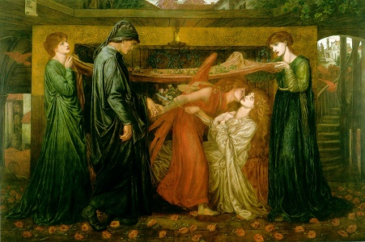

Sacred Texts Miscellaneous
Buy this Book at Amazon.com
|  | The Grateful DeadThe History of a Folk Storyby Gordon Hall Gerould[1908] |
Every rock band has its own mythological creation story. The Grateful Dead claim that Jerry Garcia was looking through a 'large book' one day (no doubt in some altered state of mind), and the phrase just popped out at him. The specific book is unknown, but scholars of the band have suggested it was a large dictionary of folklore, with an article on the topic originally proposed in this book.
The term The Grateful Dead originally referred to a set of folklore motifs relating to stories where the hero does a good turn for a dead person and gets rewarded thereby. This motif appears in a wide set of cultures, not all of which have an obvious connection. In the late 19th and early 20th century the field of folklore had matured to the point to where there was enough data to analyze these motifs cross-culturally. This book was one of the first to do a comprehensive study of one such motif on a world-wide basis, and as such occupies an important position in the study of folklore. Gerould analyzed over a hundred variants of the story, mostly from European, Near East and Asian sources. He used techniques originally used by comparative linguistics to compare the stories and untangle the development of the motif.
Of course, there is also extensive folklore about the band of the same name, much of which I was exposed to in college. A popular motif in deadhead lore is the Magic Ticket. However, I've never encountered any variant where the Ticket appeared because someone did an actual dead person a favor. . .